用卷积调制（Convolutional Modulation）替换自注意力，以 Hadamard 积与大核深度卷积构建线性复杂度的 Transformer 风格纯卷积网络。
用 k×k 深度卷积的输出作为权重，经 Hadamard 积调制 value 分支；HW×HW 的相似度矩阵被换成与特征图同尺寸的权重，空间编码由二次降为线性。
以四阶段金字塔堆叠卷积调制块，得到 N/T/S/B/L 五个变体（15M–199M），并给出核尺寸、加权策略、归一化与激活的微设计建议。
ImageNet 分类、COCO 检测、ADE20K 分割上全面超过 Swin Transformer 与 ConvNeXt；Conv2Former-L 在 ImageNet-22k 预训练后取得 87.7% top-1。
论文的目标不是刷 SOTA，而是回答一个问题：如何更高效地用卷积编码空间特征 —— 答案是一个操作、一套骨干、一组可复用的微设计结论。
早期 ConvNet 依靠堆叠卷积块与金字塔结构聚合大感受野响应，却忽视了对全局上下文信息的显式建模；SENet 一系把注意力引入 CNN 以捕获长程依赖。ConvNeXt 用 Transformer 式配方现代化 ResNet，RepLKNet 展示大核潜力，但 ConvNeXt 同时指出：不使用重参数化时核超过 7×7 几乎无增益、只增加计算负担。
自注意力建模全局成对依赖，在 ImageNet 分类与下游任务上超过当时的先进 ConvNet；但相似度矩阵为 N×N（N = H×W），处理高分辨率图像时的计算代价相当可观，检测与分割等密集预测任务尤为吃紧。
问题至此收窄为：暂未有工作把自注意力归约为一种纯卷积的调制操作，从而更高效地利用大核空间卷积来构造强 ConvNet。
对长度 N = H×W 的 token 序列 X，自注意力先由线性层生成 key、query、value，输出是 value 按相似度得分 A 的加权平均：
Attention(X) = AV， A = Softmax(QK⊤)
A 的形状为 N×N，复杂度随序列长度二次增长 —— 这正是卷积调制要替换掉的部分。
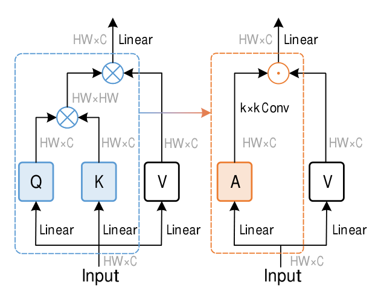
Z = A ⊙ V， A = DConvk×k(W1X)， V = W2X
⊙ 为 Hadamard 积；每个位置 (h, w) 的输出是以它为中心的 k×k 区域内像素的加权和，通道交互交给其后的线性层与 FFN。
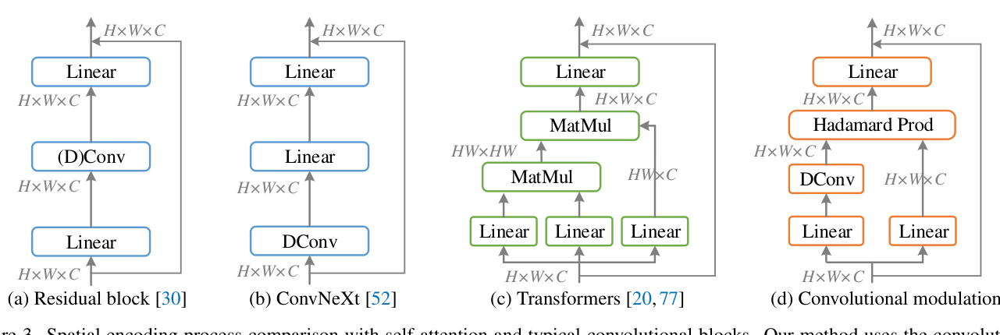
相比自注意力更省内存，相比经典残差块又能随输入内容自适应 —— 一个操作同时拿到两种好处。
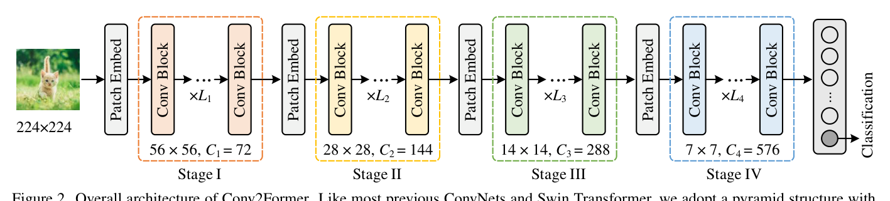
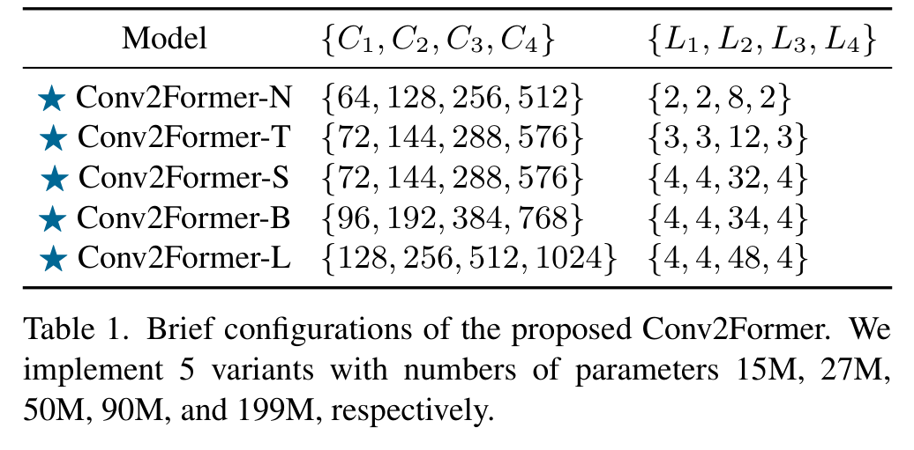
ConvNeXt 发现核从 3 增到 7 有效，但继续增大（无重参数化）几乎无增益。本文把卷积特征当权重后，增大 k 等价于扩大每个输出位置的加权感受野，5×5 到 21×21 持续增益，出于效率默认 11×11。
深度卷积输出直接作为权重调制线性投影后的特征，Hadamard 积之前既不加激活也不加归一化（Sigmoid、Lp 归一化都不加），与 SENet 一系在重标定前用 Sigmoid 的做法相反。
沿用 ViT 与 ConvNeXt 的选择，用 LayerNorm 替代 BatchNorm、GELU 作激活，原文报告该组合带来 0.1%–0.2% 的精度提升。块内数据流：深卷积 + 线性层 → Hadamard 积 → FFN。
三条微设计的证据都在实验节：核尺寸见 fig4 的消融曲线，加权策略见 tab. 6 的定量对比。
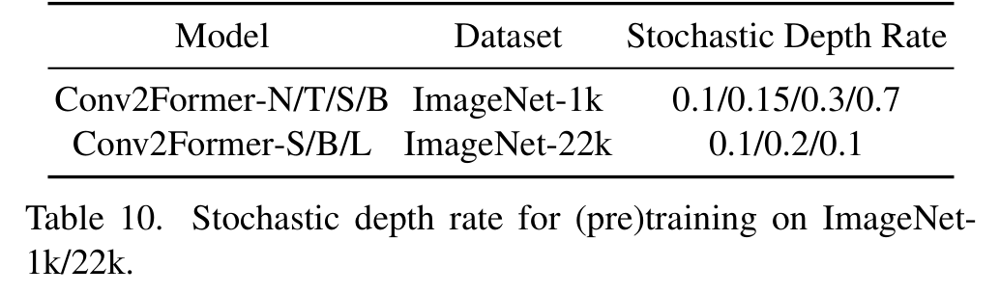
80 类；Mask R-CNN 与 Cascade Mask R-CNN，3× schedule、多尺度训练、GIoU loss，MMDetection 实现，骨干为 ImageNet-1k 预训练模型。
150 类、1038 个 image-level 标签；UperNet 解码器；tiny/small/base 裁剪 512×512，large 裁剪 640×640。
分类看 top-1 精度；检测看 APbb 与 APmask 系列；分割看 mIoU。所有下游实验均报告验证集结果。
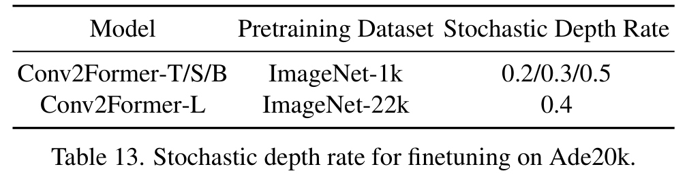
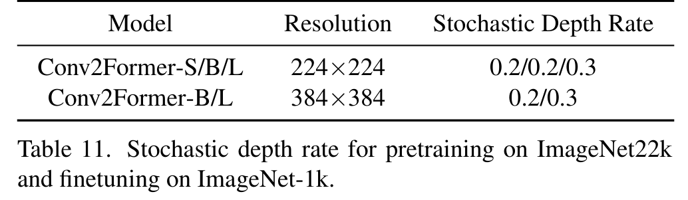
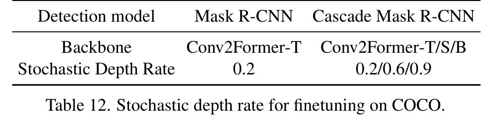
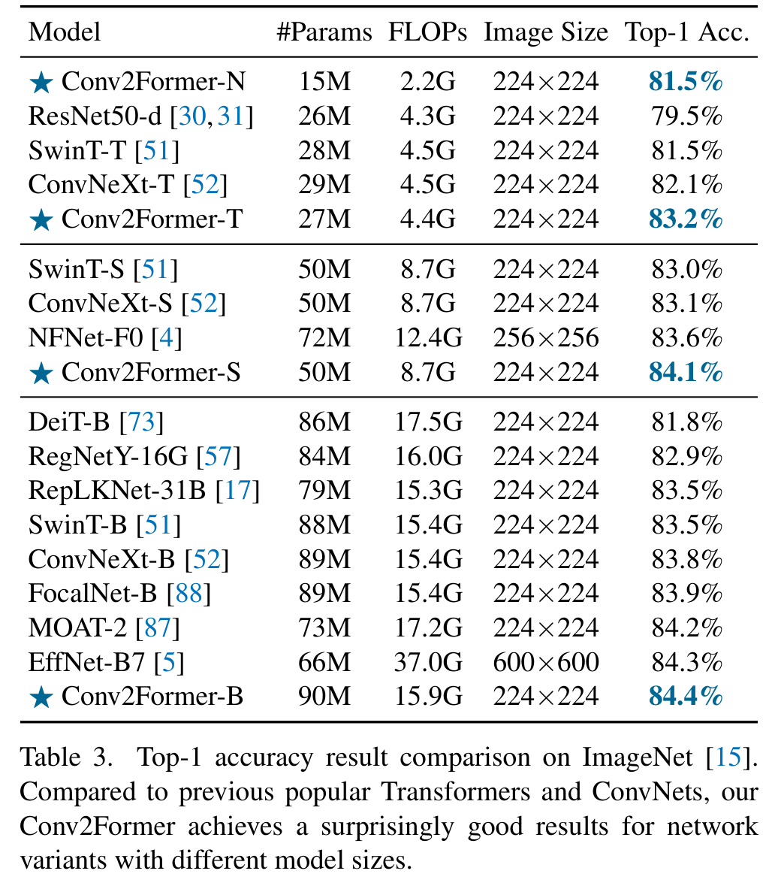
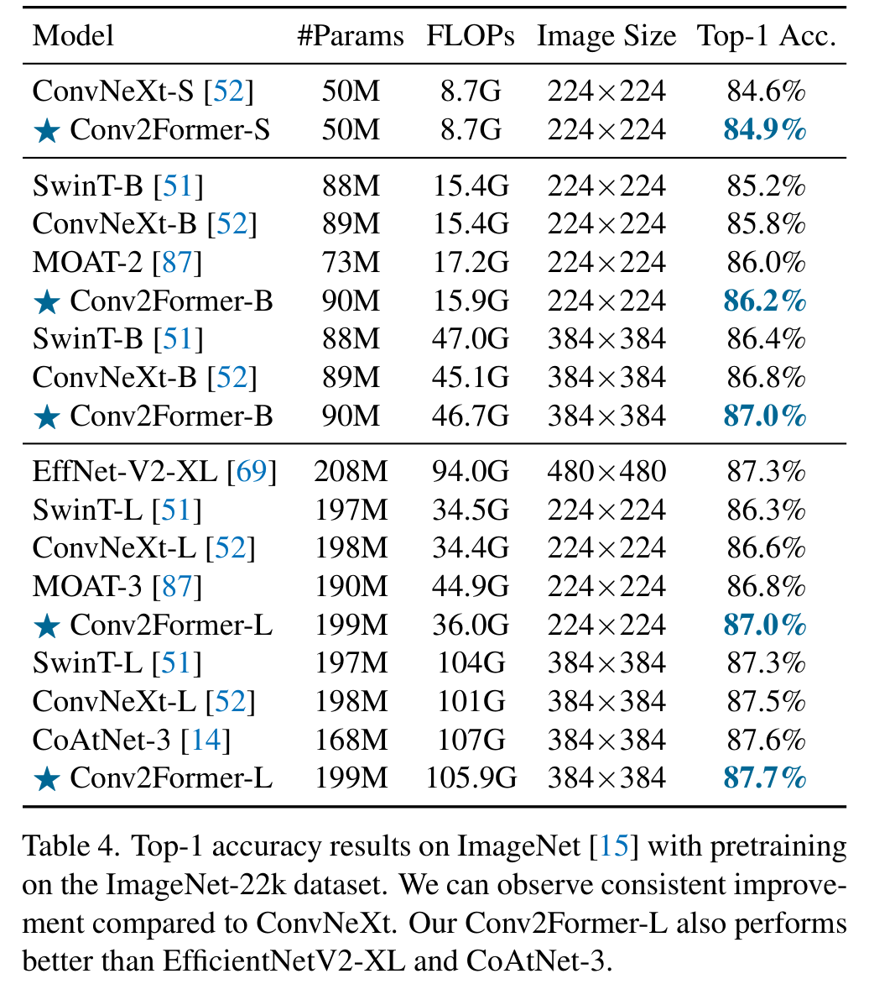
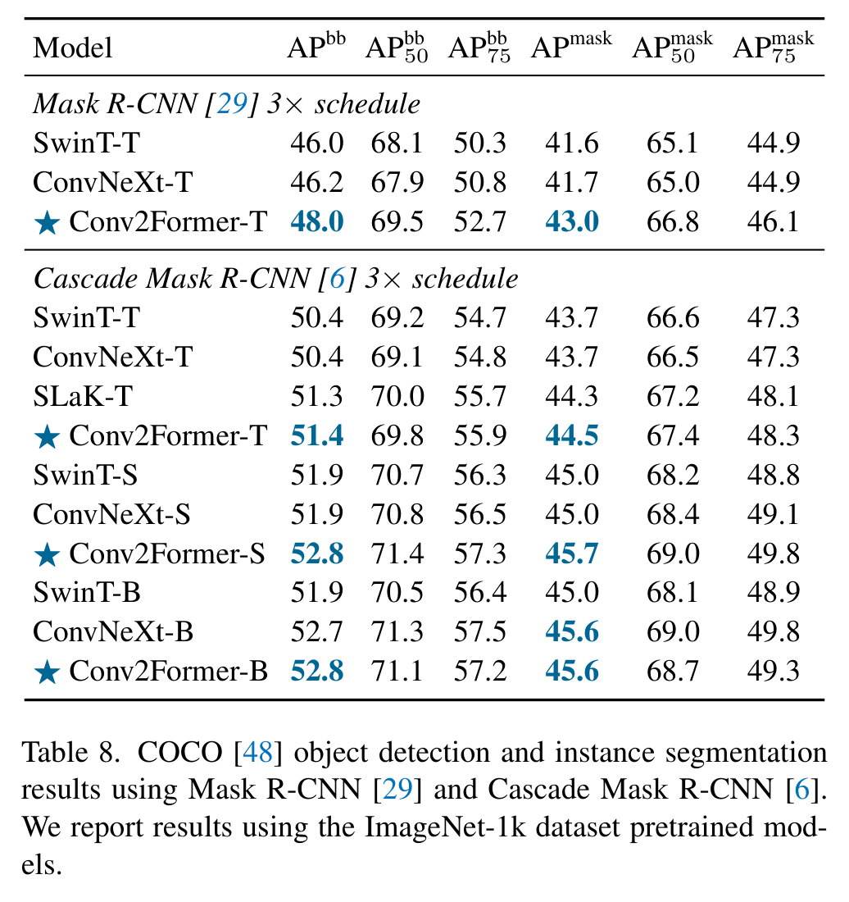
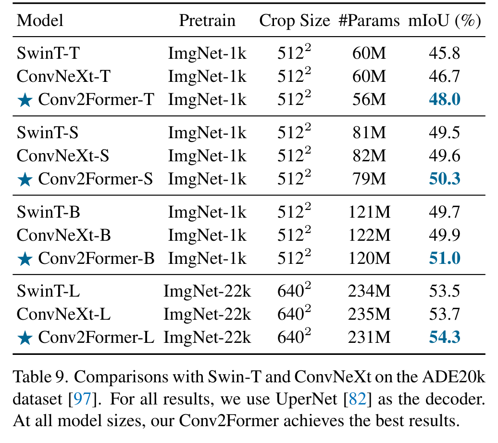
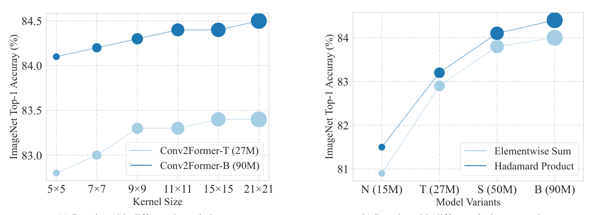
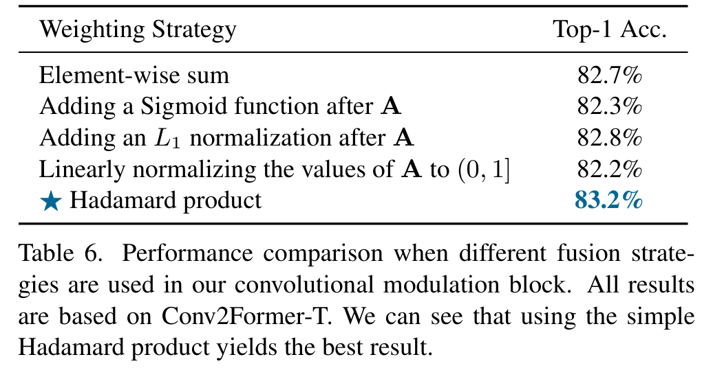
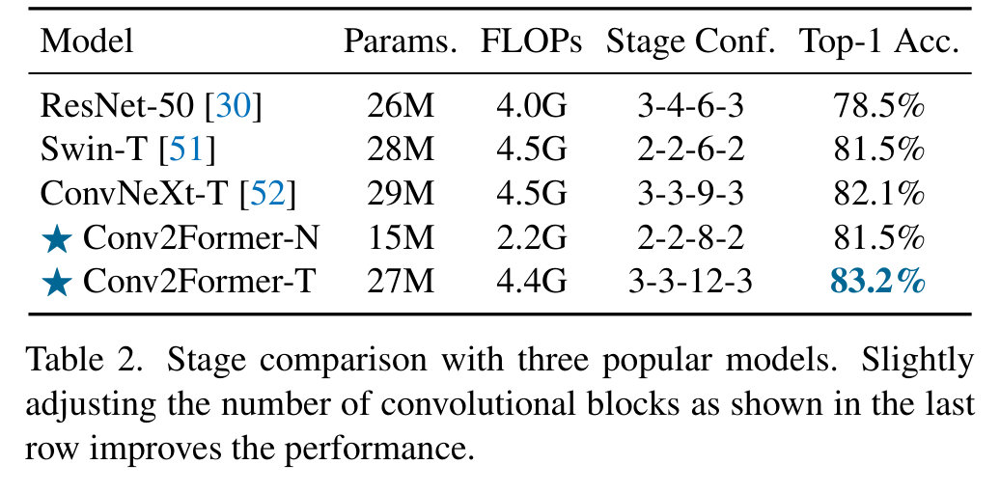
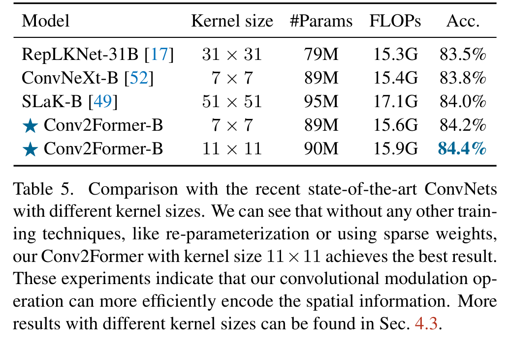
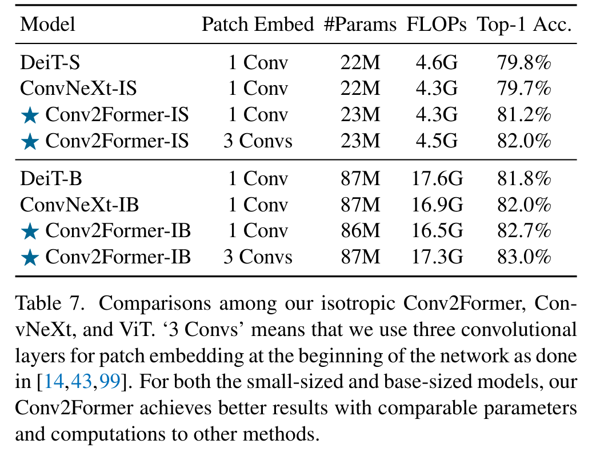
把自注意力归约为深度卷积加 Hadamard 积，从空间编码视角统一了注意力加权与卷积加权，保留内容自适应调制能力的同时把复杂度从二次降为线性，易于移植。
系统考察大核的使用方式，用 5×5 到 21×21 持续增益的证据修正「大于 7×7 无增益」的既有结论，为 ConvNet 的核尺寸选择提供可复用经验。
覆盖 ImageNet 分类、COCO 检测、ADE20K 分割三类任务，以及 22k 预训练、等向架构、核尺寸与加权策略消融，证据链完整、说服力强。